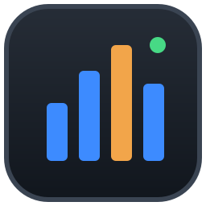
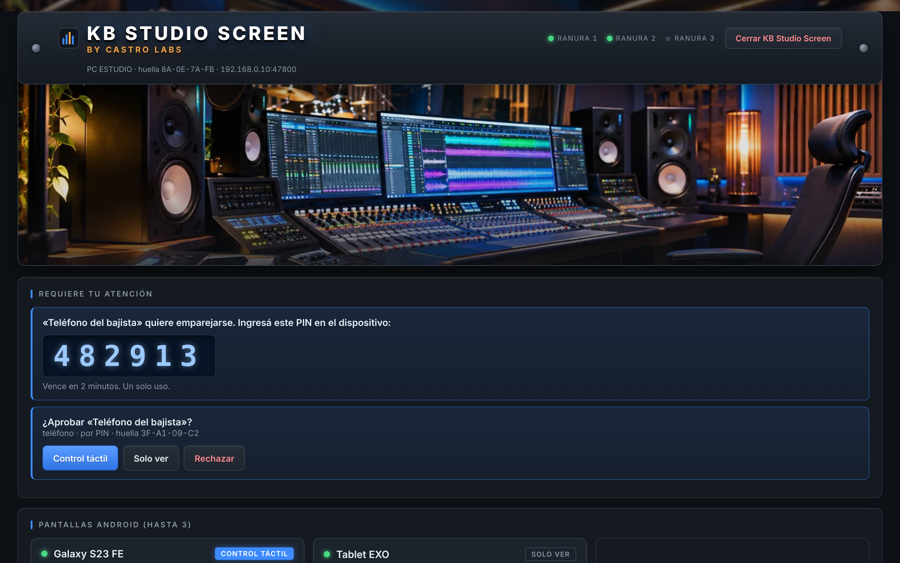
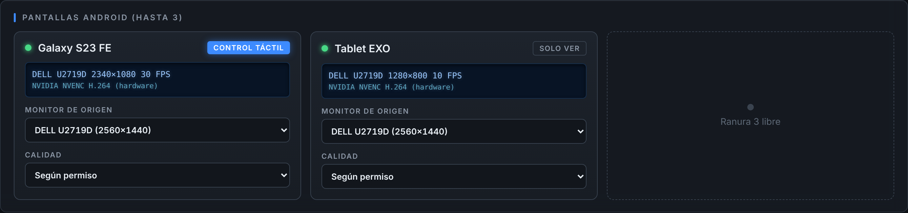
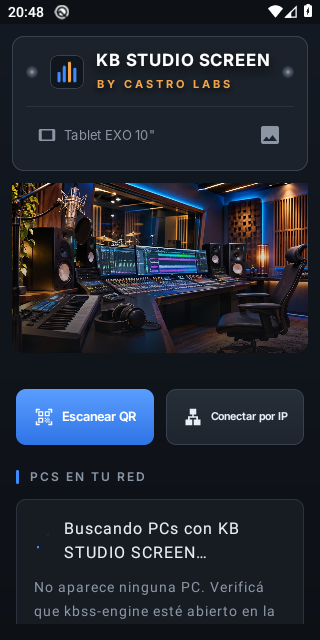
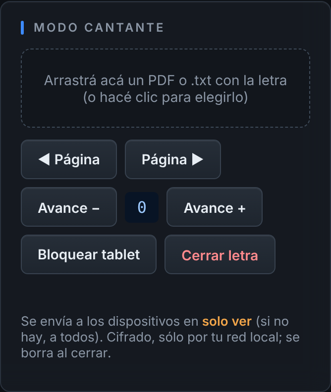
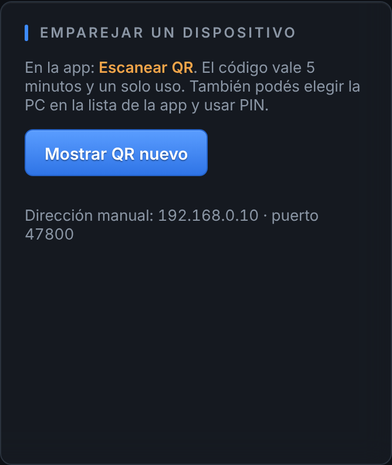

KB Studio Screen es un sistema de dos partes: un programa para tu PC con Windows y una app para Android. Juntos convierten hasta tres tablets o teléfonos en pantallas táctiles de tu computadora, por tu propia red Wi-Fi.
No es un controlador MIDI ni un mixer "de mentira": ves y tocás la interfaz real del programa que usás todos los días. Si en tu monitor hay un fader, lo movés con el dedo en la tablet, con arrastre continuo, como si estuvieras frente a la consola.
Tené el mixer de tu DAW en una tablet al lado del micrófono o del instrumento. Ajustá niveles sin volver a la PC.
La letra a pantalla completa en su tablet, con avance automático. Él sólo lee; vos controlás todo desde la PC.
Hasta tres pantallas a la vez, cada una mirando el monitor que quieras y con el permiso que vos le des.

Elegí cuál de tus monitores ver en cada dispositivo y cambialo en vivo, desde la tablet o desde la PC.
Clic, arrastre continuo de faders, rueda con dos dedos. Pellizcá para hacer zoom sólo en tu pantalla.
Tablets y teléfonos en cualquier combinación, con un solo cursor bien administrado.
Enviá un PDF o .txt arrastrándolo al panel. Páginas, avance automático, contraste y bloqueo.
Grabación vocal, Mezcla, Mastering y Personalizado. Guardá y aplicá configuraciones con un clic.
Escaneá un QR o ingresá un PIN de un solo uso. La próxima vez se conecta solo.
Mezcla para respuesta rápida, Letras para máxima nitidez o Automática.
Si el Wi-Fi se corta, la app vuelve sola a la misma pantalla, sin repetir el emparejamiento.
Ventana propia en Windows: aprobaciones, pantallas, perfiles, letras y dispositivos de confianza.

Conexión cifrada de punta a punta (TLS 1.3) y autenticación mutua de la PC y cada dispositivo. PIN y QR de un solo uso, que vencen en minutos. Permisos por dispositivo: control o solo ver. Las letras se borran de la tablet al cerrarlas. Sin telemetría: nada sale de tu estudio.


Ejecutá KBStudioScreen-Setup.exe. Windows pide permiso de administrador sólo para instalar y habilitar la red privada en el Firewall.
Abrí KBStudioScreen.apk en tu tablet o teléfono y confirmá la instalación.
Conectá la PC y los dispositivos a la misma red (ideal 5 GHz). En Windows, perfil de red Privada.
Desde el menú Inicio. Se abre el panel de control en su propia ventana.
En la app: Escanear QR (el QR está en el panel) o tocá tu PC y escribí el PIN que aparece.
En el panel elegí Control táctil o Solo ver. La próxima vez se conecta solo.
| Tocar | Clic |
| Tocar y arrastrar | Mover faders, perillas y ventanas |
| Dos dedos arriba/abajo | Rueda del mouse |
| Pellizcar | Zoom sólo en tu pantalla |

| PC | Windows 10 u 11, 64 bits. Funciona sin privilegios de administrador. |
|---|---|
| Dispositivos | Android 10 o superior: tablets y teléfonos, horizontal o vertical. Arquitecturas ARM 64/32 bits y x86-64. |
| Pantallas simultáneas | Hasta 3, cada una con su monitor de origen, su calidad y su permiso. |
| Red | Wi-Fi local (recomendado 5 GHz). Descubrimiento automático (mDNS), QR o IP manual. No requiere Internet. |
| Video | H.264 con aceleración por hardware cuando está disponible (NVIDIA, AMD, Intel) y respaldo por software. Resolución adaptada a cada pantalla; decodificación por hardware en Android. |
| Captura | DXGI Desktop Duplication: cualquier monitor físico, con el cursor visible. |
| Control | Mapeo exacto del toque al píxel de Windows (barras negras, zoom y monitores en cualquier posición). Arrastre continuo y rueda. |
| Seguridad | QUIC con TLS 1.3 y autenticación mutua por certificado. Emparejamiento con PIN (SPAKE2) o QR de un solo uso. Revocación inmediata. Panel local protegido con token. |
| Modo cantante | PDF y texto (UTF-8 / Windows-1252) hasta 64 MB. Avance automático en 10 velocidades, 3 temas de contraste, bloqueo remoto. |
| Idiomas | Español e inglés (app); español (panel). |
| Audio | No transmite ni modifica el audio: tu DAW y tu interfaz de sonido no se tocan. |
| Licencia | Pago único, sin suscripciones ni cuentas. |
| Próximamente Roadmap | Modo Extender: cada dispositivo como un monitor más de Windows (el controlador ya está desarrollado y en certificación). Conexión por USB. |
Software para estudios de grabación. Llevá tu estudio a cualquier pantalla.